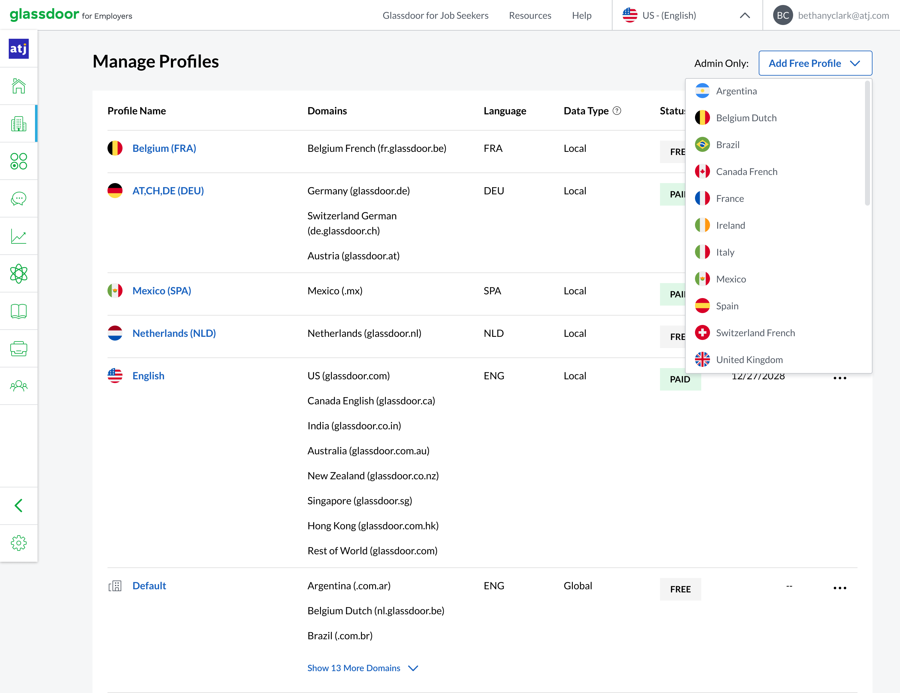

As a solo individual contributor, I managed the user experience for Glassdoor's primary B2B Product, Employer Center. Working closely with three product teams, I delivered critical platform updates in order to retain customers and provide them with best-in-class tools to manage their Employer Brands.
Project Context
About 50% of Glassdoor's customers had the need to showcase their employer brand across regions and languages. Glassdoor enabled global customers to customize region- and language-specific content by top level domain (e.g. glassdoor.com/glassdoor, glassdoor.de/glassdoor). Yet, due to bugs & code infrastructer, content displayed did not always match customers' expectations. Additionally, various levels of customization were not well understood by customers or Glassdoor support staff.
The goals of this project were to:
For Customers: Enable employers full control of their global branded content and visibility of what consumer users are seeing across the world, through a frustration-free content management experience.
For Consumer Users: Give professionals access to the most relevant and robust content about a complany they are researching on Glassdoor.
For Glassdoor: Increase job satisfaction for CSMs by giving them better tools to troubleshoot issues related to management of multiple global profiles; decrease in support tickets related to content management issues; and increase developer efficiency.
Company Profile on glassdoor.com (United States)Company Profile on glassdoor.co.in (India)Company Profile on glassdoor.nz (New Zealand)
Setting Up & Managing International Profiles
Employers first needed to be able to set the regions and languages for which they wanted to display custom content. Users could add any regional profile for free, which allowed them to customize a limited set of content for that top level domain. Users could also group top level domains in order to customize content for a broader region (e.g. group Mexico & Spain to customize Spanish-langugage content).

Navigating Between Profiles
Navigating to the correct profile to customize was very important within employers' workflow. We iterated through various information architecture (IA) models to organize regional and language groups and to indicate which content users would be able to customize, including free & paid (noted as "Enhanced Profile") fields.
The simplest use case, where employers did not customize any content by region or language.A more common use case, where employers had a mix of free and enhanced profiles and groupings.The most complex use case, where employers also managed Indeed branded content.
Subnavigaion for managing global default content.Subnavigation for customizing free profile content.Subnavigation for customizing enhanced profile content.
Managing Profile Content
Employers were then able to manage their branded content at the field level. They could set global company details which would display across all domains unless customized. Tooltips, tags, and enabled/disabled states across the UX helped users understand the level of customization they were managing.